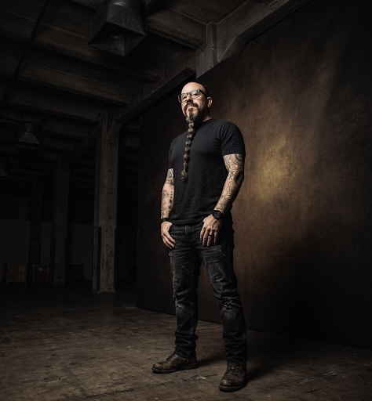

Designer, strategist, and product thinker with 20+ years building teams and products across finance, healthcare, tech, and automotive. This hub is one small piece of that — here's the person behind it.

I'm a designer, strategist, and product thinker with 20+ years building teams and products across finance, healthcare, tech, big data, and automotive — in startups, in corporate environments, and on my own. Products I shipped at Prudential Financial and Northwell Health are still running, and still winning awards.
My approach is human-centered and data-informed: design that gets tested, iterated, tested again, and still keeps a spark of soul. I'm most useful when the problem is messy — merging design and engineering cultures, modernizing legacy systems, or helping a team remember what it feels like to make something people love.
Every good idea starts with a cup. Every great idea starts with two.
If it can be framed, I'm already thinking about the shot — documentary-style, natural light, no exceptions.
Trails, farms, small towns, mountain views. It keeps showing up in the work. Hard not to be inspired.
Yes, I notice bad kerning in restaurant menus. No, I cannot be stopped.
Integrated into every stage of the workflow. The strategy, craft, and decisions are still human — the speed isn't.
The problems keep changing. The satisfaction of solving them hasn't. That's the whole reason to keep doing this.